Visualize differential expression (DE) results — typically the output of
Seurat::FindMarkers() or
Seurat::FindAllMarkers() — across a
variety of plot types. MarkersPlot() bridges the gap between DE
testing and visualization by providing a unified interface for both
summary-level DE visualizations (volcano, jitter, heatmap, and dot
plots of fold changes and significance) and expression-level
visualizations (violin, box, bar, ridge, heatmap, and dot plots of actual
expression values from a Seurat object).
The function handles two broad categories of plots:
DE summary plots (no
objectrequired): visualize the DE statistics themselves — log2 fold change, percentage difference, p-values, and adjusted p-values — across groups or comparisons."volcano"/"volcano_log2fc"— Volcano plot with log2 fold change on the x-axis and \(-log_{10}(p)\) on the y-axis. Genes passing thecutoffare highlighted and top genes are labeled. Ideal for overview of effect size vs. significance."volcano_pct"— Volcano plot with percentage-point difference (pct.1 - pct.2) on the x-axis. Useful when the biological question is about detection rate rather than expression magnitude."jitter"/"jitter_log2fc"— Jitter plot of log2 fold changes across groups (defined bysubset_by). Dot size encodes \(-log_{10}(p)\). Reveals distribution of effect sizes per cluster or condition."jitter_pct"— Jitter plot of percentage-point differences across groups."heatmap_log2fc"— Heatmap of log2 fold changes (genes × groups). Cells can be marked for significance viacutoffandsig_mark."heatmap_pct"— Heatmap of percentage-point differences (genes × groups). Same significance-marking support."dot_log2fc"— Dot plot of log2 fold changes (genes × groups). Dot size encodes \(-log_{10}(p)\)."dot_pct"— Dot plot of percentage-point differences (genes × groups). Dot size encodes \(-log_{10}(p)\).
Expression plots (
objectrequired): visualize the actual expression values of the selected marker genes in the context of the original Seurat object. These are useful for validating DE results by inspecting the underlying expression distributions."heatmap"— Expression heatmap of selected marker genes."violin"— Violin plots of expression per gene."box"— Box plots of expression per gene."bar"— Bar plots of mean expression per gene."ridge"— Ridge plots of expression distribution per gene."dot"— Dot plot of expression (fraction expressing × mean expression) per gene.
Usage
MarkersPlot(
markers,
object = NULL,
plot_type = c("volcano", "volcano_log2fc", "volcano_pct", "jitter", "jitter_log2fc",
"jitter_pct", "heatmap_log2fc", "heatmap_pct", "dot_log2fc", "dot_pct", "heatmap",
"violin", "box", "bar", "ridge", "dot"),
subset_by = NULL,
subset_as_facet = FALSE,
comparison_by = NULL,
p_adjust = TRUE,
cutoff = NULL,
show_labels = FALSE,
sig_mark = "*",
order_by = NULL,
select = ifelse(plot_type %in% c("volcano", "volcano_log2fc", "volcano_pct",
"jitter", "jitter_log2fc", "jitter_pct"), 5, 10),
...
)Arguments
- markers
A data frame of differential expression results, typically the output of
Seurat::FindMarkers()orSeurat::FindAllMarkers(). Must contain columns"gene"(or gene symbols as rownames),"p_val", and"avg_log2FC". For percentage-based plots (volcano_pct,jitter_pct,heatmap_pct,dot_pct), columns"pct.1"and"pct.2"are also required.- object
A Seurat object. Required for expression-based plot types:
"heatmap","violin","box","bar","ridge", and"dot". Not used for DE summary plot types. Default:NULL.- plot_type
The type of plot to generate. One of
"volcano","volcano_log2fc","volcano_pct","jitter","jitter_log2fc","jitter_pct","heatmap_log2fc","heatmap_pct","dot_log2fc","dot_pct","heatmap","violin","box","bar","ridge", or"dot". See Description for details on each type.- subset_by
A column name in
markersindicating the grouping from which each marker was identified (e.g., theclustercolumn fromFindAllMarkers()). Supports the"marker_column:metadata_column"syntax for linking to Seurat object metadata (see Metadata column mapping section). For jitter and DE heatmap/dot plot types,subset_byis required and defines the x-axis or column groups. For expression plot types,subset_bycontrols faceting or splitting. Default:NULL.- subset_as_facet
Logical. If
TRUE, facet the plot bysubset_bygroups instead of splitting into separate plots. Most useful for expression plot types. For volcano plots, controls whether faceting or split_by dispatch is used. Default:FALSE.- comparison_by
A column name in
markersindicating the comparison (e.g.,"g1:g2"for a pairwise comparison, or a single group name for one-vs-rest). Required for expression-based plot types ("heatmap","violin","box","bar","ridge","dot"). Supports the"marker_column:metadata_column"syntax (see Metadata column mapping section). If the comparison values contain a colon (e.g.,"G2M:G1"), the two groups on either side of the colon are used to subset the object. If only a single group is present, a one-vs-other comparison is assumed. Default:NULL.- p_adjust
Logical. If
TRUE(default), use adjusted p-value (p_val_adjcolumn) for significance calculations and y-axis transformations. IfFALSE, use raw p-value (p_valcolumn).- cutoff
Numeric. The p-value (or adjusted p-value, depending on
p_adjust) threshold for labeling significance. For volcano plots, setsy_cutoff. For heatmap-based DE plots (heatmap_log2fc,heatmap_pct), controls which cells receive significance marks. Default:NULL(no cutoff; defaults to0.05for volcano plots).- show_labels
Logical. For
heatmap_log2fcandheatmap_pctplot types only. IfTRUE, display numeric values in heatmap cells. When combined withcutoff, both values and significance marks are shown. Default:FALSE.- sig_mark
Character. The symbol or compound mark used to annotate statistically significant cells in
heatmap_log2fcandheatmap_pctplots. Must be a valid ComplexHeatmap mark: single characters ("-","|","+","/","\\","x","o") or compound marks ("[*]","<*>","(*)","{*}"). Note that"*"conflicts withshow_labels = TRUEbecause both use the label layer — use a compound mark instead. Default:"*".- order_by
A string expression to order markers by (evaluated with
dplyr::arrange()). Can reference columns inmarkersas well as columns from the object metadata (whenobjectis provided andsubset_byenables merging). Only the first value of merged metadata columns is used. Example:"desc(avg_log2FC)". The ordering affects which markers are selected whenselectis numeric. Default:NULL.- select
How to select markers for labeling or display. See Marker selection and filtering section for full details.
Numeric: Top N markers per
subset_bygroup (default:5for volcano/jitter types,10for others).Character expression: Filter condition for
dplyr::filter().Character vector: Multiple filter expressions; those containing the
subset_bycolumn name filter the overall data, others filter within remaining data.
- ...
Additional arguments passed to the underlying plotting function, depending on
plot_type:- For
volcano,volcano_log2fc,volcano_pct Passed to
plotthis::VolcanoPlot(). Common arguments:x_cutoff,x_cutoff_name,label_by,color_by,nlabel,flip_negative.- For
jitter,jitter_log2fc,jitter_pct Passed to
plotthis::JitterPlot(). Common arguments:add_hline,shape,size_by,nlabel.- For
heatmap_log2fc,heatmap_pct,dot_log2fc,dot_pct Passed to
plotthis::Heatmap(). Common arguments:show_row_names,show_column_names,values_fill,palette,cluster_rows,cluster_columns,add_reticle.- For
heatmap,violin,box,bar,ridge,dot Passed to
FeatureStatPlot. Common arguments:name,palette,ncol,nrow,stack,columns_split_by.
- For
Value
A ggplot object (from plotthis::VolcanoPlot()
or plotthis::JitterPlot()), a
Heatmap object (from plotthis::Heatmap()),
or a ggplot/patchwork object (from FeatureStatPlot). When
split_by or faceting generates multiple plots and
combine = TRUE (default), a combined patchwork object is
returned; when combine = FALSE, a list of individual plots is
returned.
Note
subset_byis required for jitter plots ("jitter","jitter_log2fc","jitter_pct") and DE heatmap/dot plots ("heatmap_log2fc","heatmap_pct","dot_log2fc","dot_pct"). Without it, there is no grouping axis.comparison_byis required for expression-based plot types ("heatmap","violin","box","bar","ridge","dot") — it tells the function which comparison groups to extract from the object.When
objectis provided andsubset_bymaps to a metadata column, the markers data frame is left-joined with the object metadata. Only the first row per group is kept for non-key columns, which is sufficient for most annotation purposes but can cause issues if per-cell metadata is needed.For expression-based heatmap and dot plots, when
subset_by_2is available (i.e., the metadata column is mapped), genes are automatically grouped bysubset_byviacolumns_split_by, andgroup_byis set toNULL.The function calculates \(-log_{10}(p)\) (or \(-log_{10}(p_{adj})\)) internally and stores it in a temporary
neg_log10_pcolumn. This column is available for use inorder_by.When the comparison involves only a single group (one-vs-rest), cells not in the comparison group are labeled
"Other"in the object metadata.
Metadata column mapping
Both subset_by and comparison_by support a special
"marker_column:metadata_column" syntax for linking columns in the
markers data frame to columns in the Seurat object's metadata.
The part before the colon refers to a column in
markers.The part after the colon refers to a column in
object@meta.data.If only one name is provided (no colon), it is used for both the markers column and the metadata column (if a matching metadata column exists).
Example:
subset_by = "cluster:RNA_snn_res.0.8"maps theclustercolumn in the DE results to theRNA_snn_res.0.8column in the Seurat metadata.
When the markers data frame and object metadata are merged via
subset_by, only the first value of each non-key column within each
group is retained — this is by design to avoid duplication.
Marker selection and filtering
The select argument supports three modes:
Numeric — Select the top
Nmarkers (ordered byorder_by) within each group defined bysubset_by. For volcano and jitter plots, all markers are plotted but only the topNper group are labeled. For other plot types, only the selected markers are shown.Single expression — A filter expression string evaluated by
dplyr::filter(). For example,"p_val_adj < 0.05 & avg_log2FC > 1". All markers matching the condition are retained across all groups.Multiple expressions (character vector) — Each element is evaluated independently. Expressions that mention the
subset_bycolumn filter the overall data (removing groups); other expressions filter within the remaining data. For example,select = c("cluster %in% c('0', '1')", "p_val_adj < 0.05")first restricts to clusters 0 and 1, then keeps only significant markers. A numeric string like"5"among the expressions is treated as a top-N selection.
Default select: 5 for volcano and jitter plot types,
10 for all other plot types.
Significance marking in heatmaps
For heatmap_log2fc and heatmap_pct, the cutoff and
sig_mark arguments control how statistically significant cells are
annotated in the heatmap:
When
cutoffis set andshow_labels = FALSE, cells with p-value (or adjusted p-value) below the cutoff are marked withsig_markusing ComplexHeatmap's mark system. Validsig_markvalues include"-","|","+","/","\\","x","o", and compound marks like"[*]","<*>","(*)","{*}".When
cutoffis set andshow_labels = TRUE, both numeric values and significance marks are displayed (cell_type = "label+mark"). Note thatsig_mark = "*"does not work withshow_labels = TRUE— use compound marks instead.When
cutoff = NULLandshow_labels = TRUE, all cells are labeled with their numeric values.
Examples
# \donttest{
data(pancreas_sub)
markers <- Seurat::FindMarkers(pancreas_sub,
group.by = "Phase", ident.1 = "G2M", ident.2 = "G1")
#> For a (much!) faster implementation of the Wilcoxon Rank Sum Test,
#> (default method for FindMarkers) please install the presto package
#> --------------------------------------------
#> install.packages('devtools')
#> devtools::install_github('immunogenomics/presto')
#> --------------------------------------------
#> After installation of presto, Seurat will automatically use the more
#> efficient implementation (no further action necessary).
#> This message will be shown once per session
allmarkers <- Seurat::FindAllMarkers(pancreas_sub) # seurat_clusters
#> Calculating cluster 0
#> Calculating cluster 1
#> Calculating cluster 2
#> Calculating cluster 3
#> Calculating cluster 4
#> Calculating cluster 5
#> Calculating cluster 6
MarkersPlot(markers)
#> Warning: no non-missing arguments to min; returning Inf
#> Warning: no non-missing arguments to max; returning -Inf
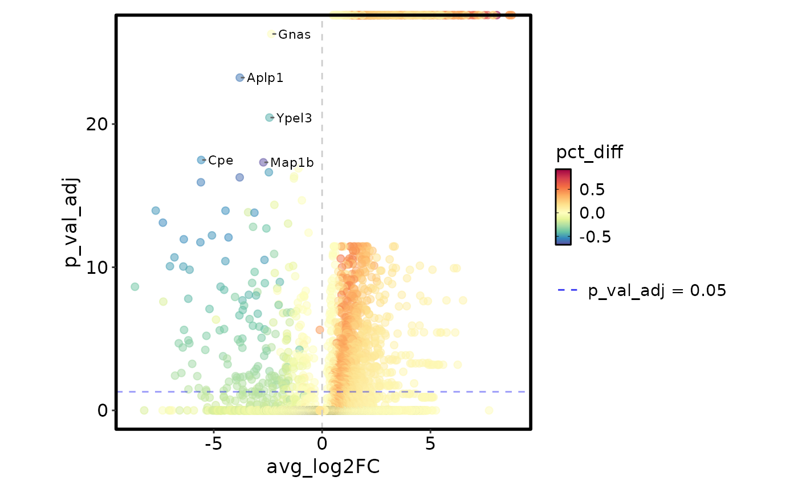
MarkersPlot(markers, x_cutoff = 2)
#> Warning: no non-missing arguments to min; returning Inf
#> Warning: no non-missing arguments to max; returning -Inf
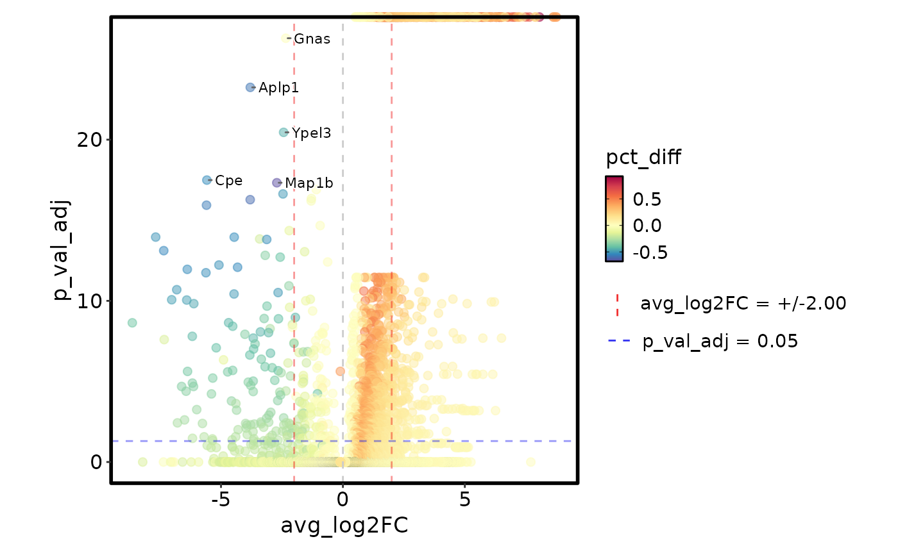
MarkersPlot(allmarkers,
subset_by = "cluster", ncol = 2, subset_as_facet = TRUE)
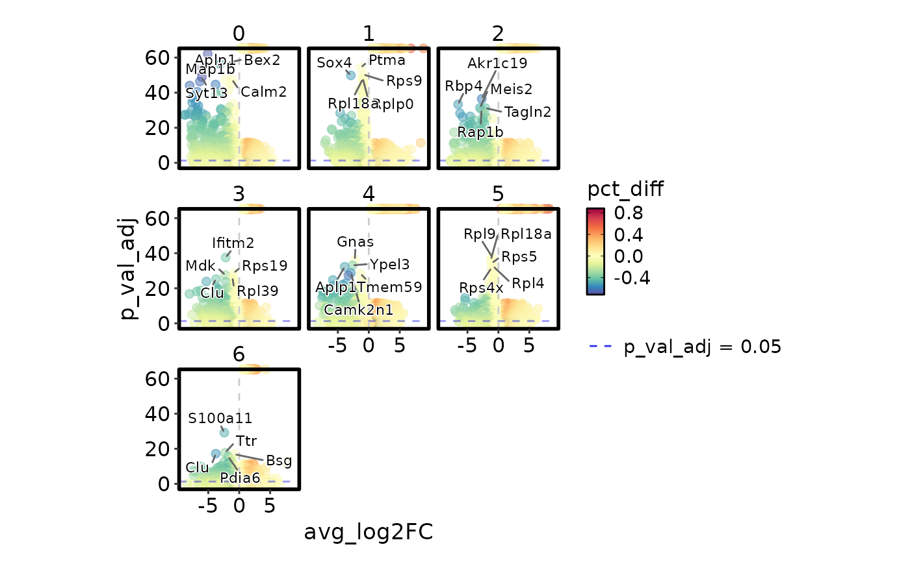
MarkersPlot(markers, plot_type = "volcano_pct", flip_negative = TRUE)
#> Warning: no non-missing arguments to min; returning Inf
#> Warning: no non-missing arguments to max; returning -Inf
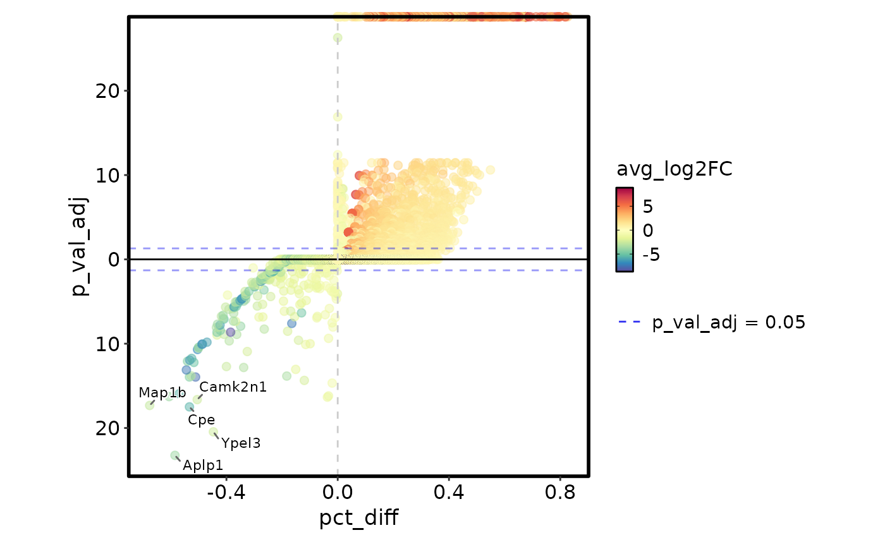
MarkersPlot(allmarkers, plot_type = "jitter", subset_by = "cluster")
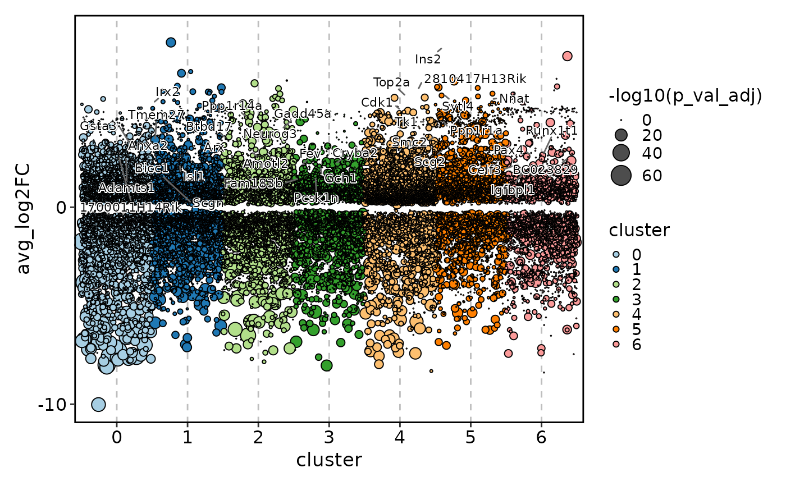
MarkersPlot(allmarkers, plot_type = "jitter_pct",
subset_by = "cluster", add_hline = 0, shape = 16)
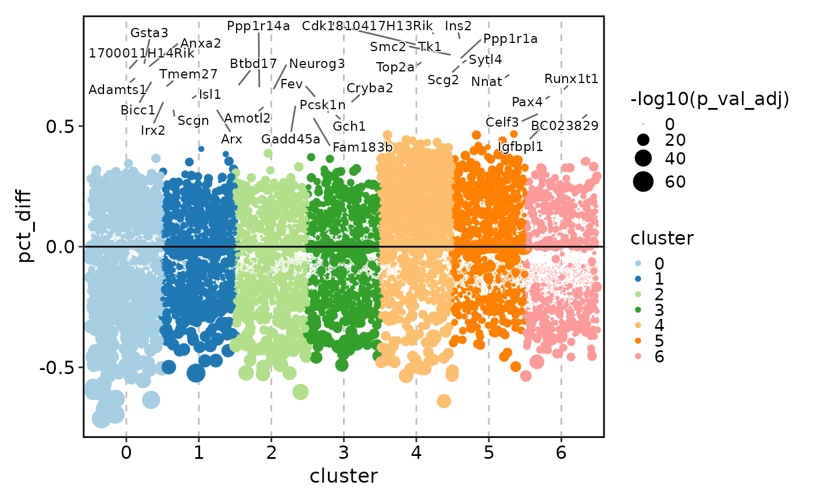
MarkersPlot(allmarkers, plot_type = "heatmap_log2fc", subset_by = "cluster")
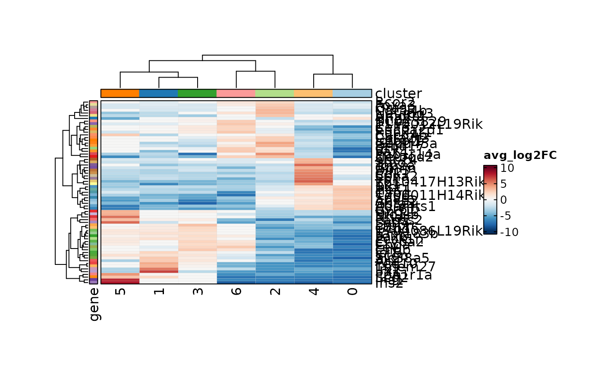
MarkersPlot(allmarkers, plot_type = "heatmap_log2fc", subset_by = "cluster",
label = scales::label_number(accuracy = 0.01),
cutoff = 0.05, show_labels = TRUE, sig_mark = '{}')
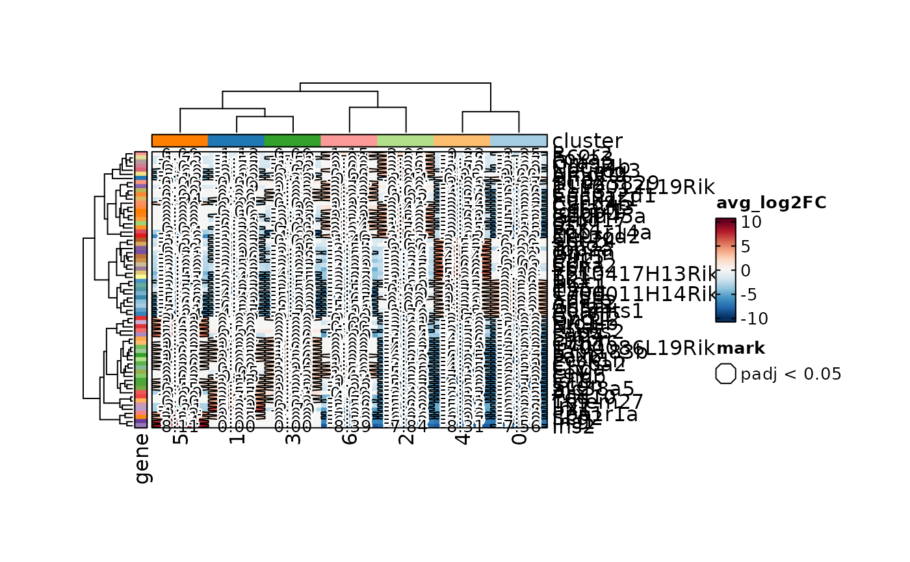
MarkersPlot(allmarkers, plot_type = "heatmap_pct", subset_by = "cluster",
cutoff = 0.05)
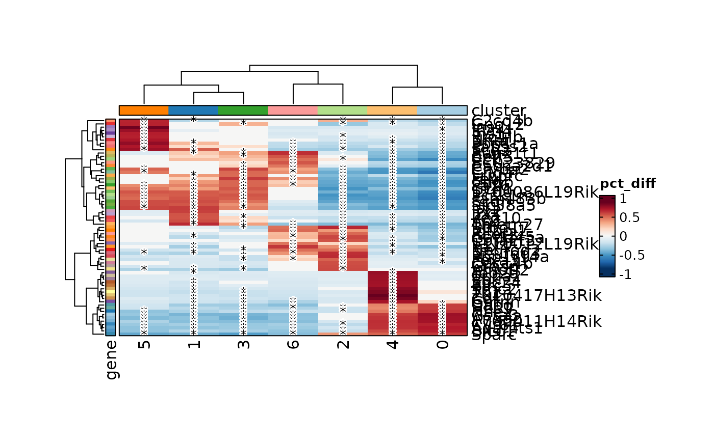
MarkersPlot(allmarkers, plot_type = "dot_log2fc", subset_by = "cluster",
add_reticle = TRUE)
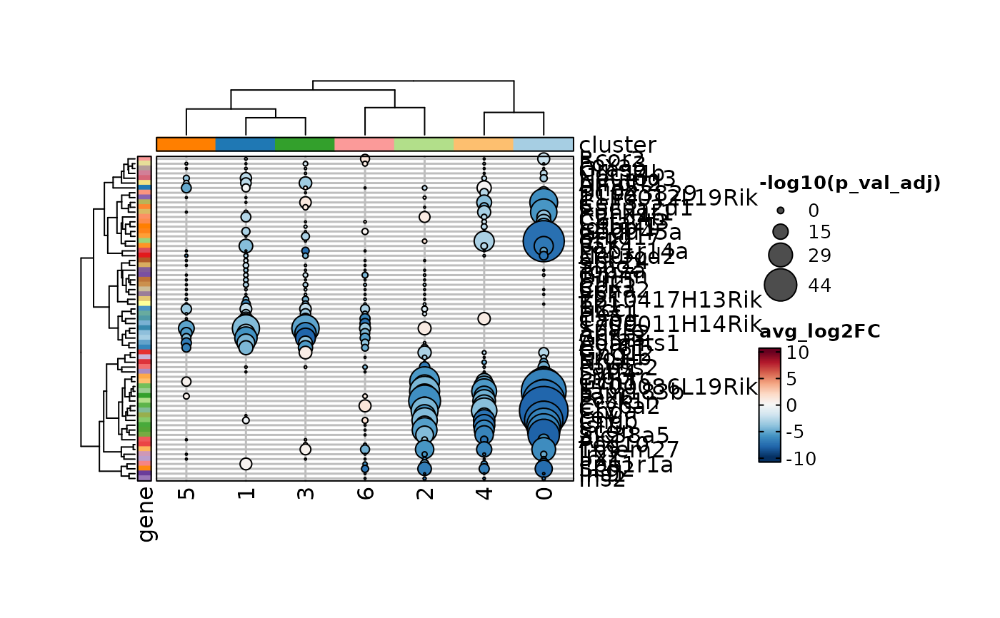
MarkersPlot(allmarkers, object = pancreas_sub, plot_type = "heatmap",
columns_split_by = "CellType",
comparison_by = "cluster:seurat_clusters")
#> Warning: Layer counts isn't present in the assay object; returning NULL
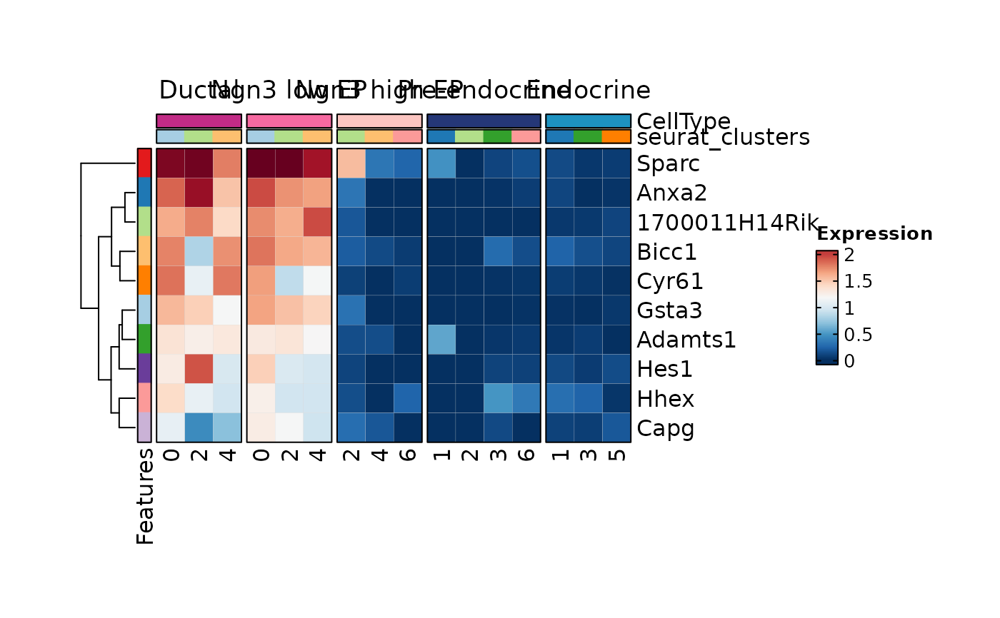
# Suppose we did a DE between g1 and g2 in each cluster
allmarkers$comparison <- "g1:g2"
MarkersPlot(allmarkers, object = pancreas_sub, plot_type = "heatmap",
comparison_by = "Phase", subset_by = "cluster:seurat_clusters")
#> Warning: Layer counts isn't present in the assay object; returning NULL
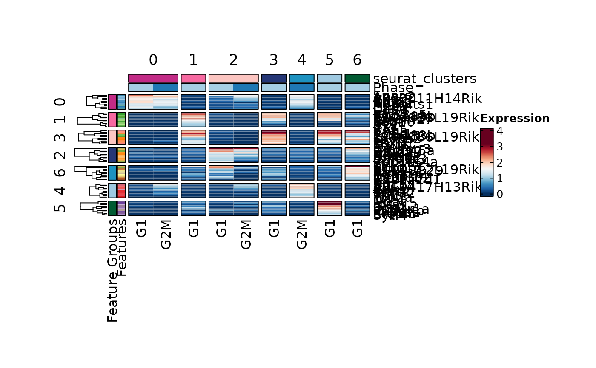
MarkersPlot(allmarkers, object = pancreas_sub, plot_type = "dot",
comparison_by = "Phase", subset_by = "cluster:seurat_clusters")
#> Warning: Layer counts isn't present in the assay object; returning NULL
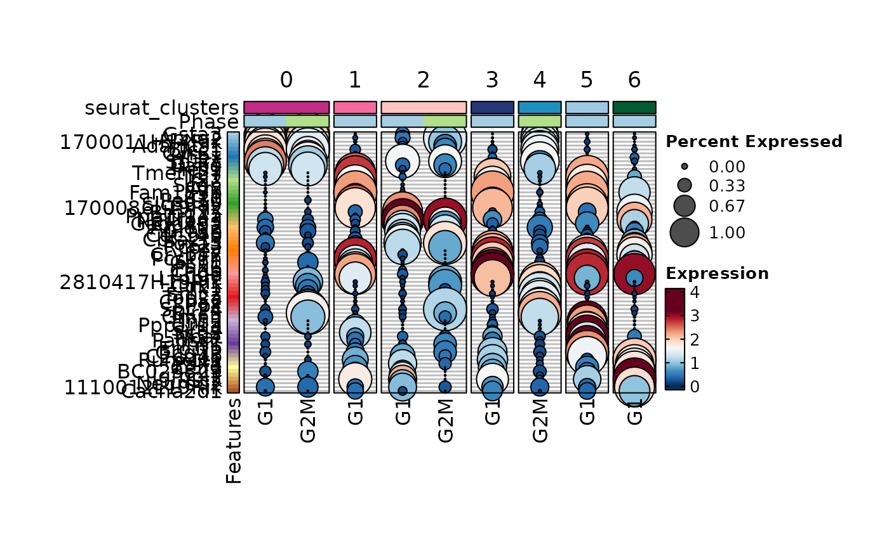
MarkersPlot(allmarkers, object = pancreas_sub, plot_type = "violin", select = 3,
comparison_by = "Phase", subset_by = "cluster:seurat_clusters")
#> Warning: Layer counts isn't present in the assay object; returning NULL
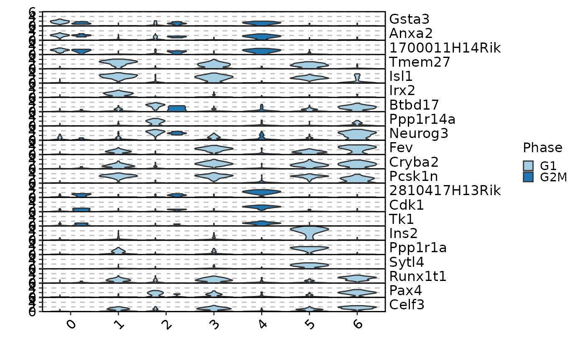
# select markers with a custom condition, e.g.,
# significant markers in cluster 0, 1, and 2 with pct.2 - pct.1 > 0.6
# Note that other clusters are still included in the plot
MarkersPlot(allmarkers, object = pancreas_sub, plot_type = "violin", subset_by = "cluster",
select = c('cluster %in% c("1", "2", "0") & pct.2 - pct.1 > 0.6'),
comparison_by = "cluster:seurat_clusters",
cutoff = 0.05)
#> Warning: [MarkersPlot] `subset_by` 'cluster' is ignored, since it is not found in the object's metadata. Set `subset_by` to 'cluster:<object_metadata_column>' to make it work.
#> Warning: Layer counts isn't present in the assay object; returning NULL
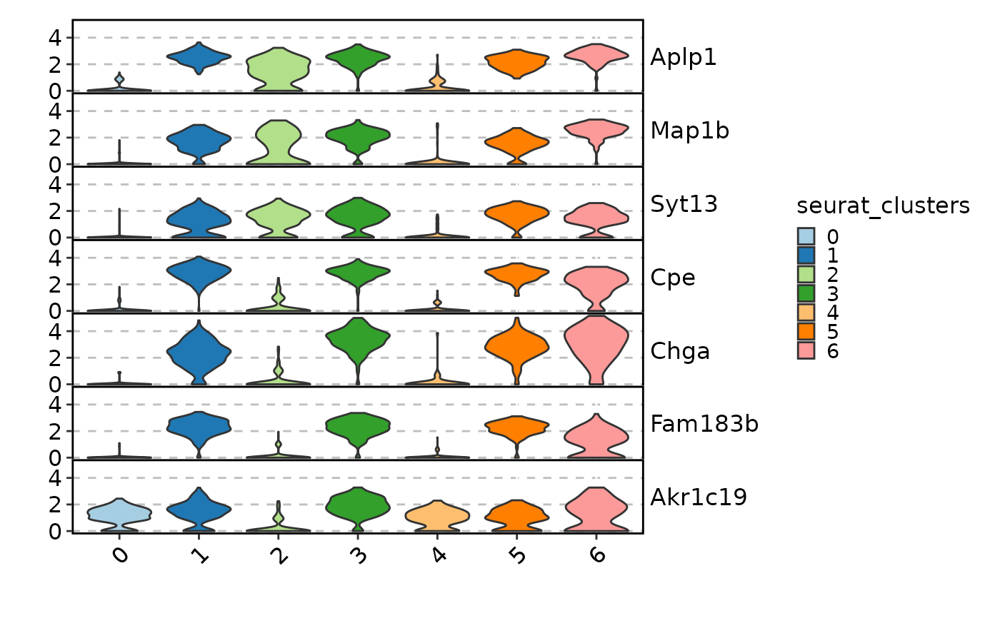
# To exclude other clusters, you can separate the filtering conditions into
# multiple expressions
MarkersPlot(allmarkers, object = pancreas_sub, plot_type = "violin", subset_by = "cluster",
select = c('cluster %in% c("1", "2", "0")', 'pct.2 - pct.1 > 0.6'),
comparison_by = "cluster:seurat_clusters",
cutoff = 0.05)
#> Warning: [MarkersPlot] `subset_by` 'cluster' is ignored, since it is not found in the object's metadata. Set `subset_by` to 'cluster:<object_metadata_column>' to make it work.
#> Warning: Layer counts isn't present in the assay object; returning NULL
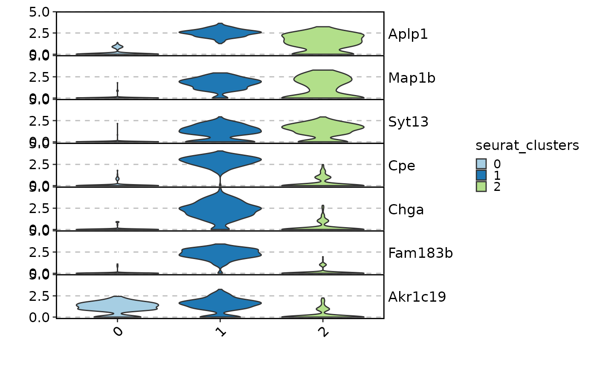
MarkersPlot(allmarkers, object = pancreas_sub, plot_type = "box", select = 3,
comparison_by = "Phase", subset_by = "cluster:seurat_clusters")
#> Warning: Layer counts isn't present in the assay object; returning NULL
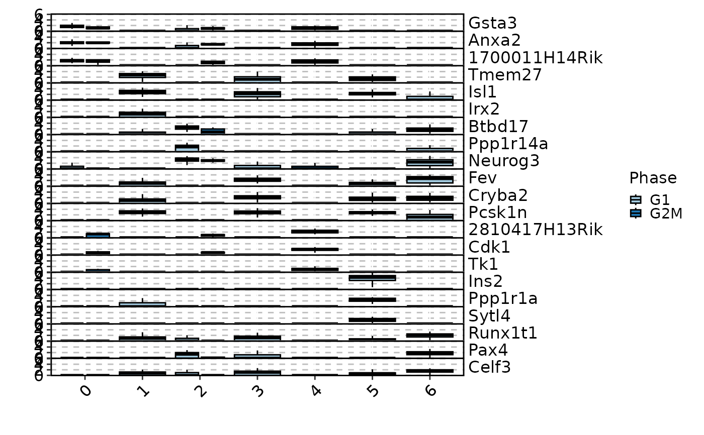
MarkersPlot(allmarkers, object = pancreas_sub, plot_type = "ridge", select = 2,
comparison_by = "Phase", subset_by = "cluster:seurat_clusters",
ncol = 2)
#> Warning: Layer counts isn't present in the assay object; returning NULL
#> Picking joint bandwidth of 0.222
#> Picking joint bandwidth of 0.155
#> Picking joint bandwidth of 0.32
#> Picking joint bandwidth of 0.331
#> Picking joint bandwidth of 0.118
#> Picking joint bandwidth of 0.32
#> Picking joint bandwidth of 0.322
#> Picking joint bandwidth of 0.105
#> Picking joint bandwidth of 0.265
#> Picking joint bandwidth of 0.232
#> Picking joint bandwidth of 0.326
#> Picking joint bandwidth of 0.31
#> Picking joint bandwidth of 0.094
#> Picking joint bandwidth of 0.306
#> Picking joint bandwidth of 0.0355
#> Picking joint bandwidth of 0.116
#> Picking joint bandwidth of 0.33
#> Picking joint bandwidth of 0.278
#> Picking joint bandwidth of 0.186
#> Picking joint bandwidth of 0.102
#> Picking joint bandwidth of 0.251
#> Picking joint bandwidth of 0.261
#> Picking joint bandwidth of 0.0735
#> Picking joint bandwidth of 0.0714
#> Picking joint bandwidth of 0.202
#> Picking joint bandwidth of 0.267
#> Picking joint bandwidth of 0.256
#> Picking joint bandwidth of 0.0755
#> Picking joint bandwidth of 0.234
#> Picking joint bandwidth of 0.201
#> Picking joint bandwidth of 0.381
#> Picking joint bandwidth of 0.478
#> Picking joint bandwidth of 0.573
#> Picking joint bandwidth of 0.515
#> Picking joint bandwidth of 0.381
#> Picking joint bandwidth of 0.419
#> Picking joint bandwidth of 0.174
#> Picking joint bandwidth of 0.132
#> Picking joint bandwidth of 0.368
#> Picking joint bandwidth of 0.356
#> Picking joint bandwidth of 0.461
#> Picking joint bandwidth of 0.259
#> Picking joint bandwidth of 0.327
#> Picking joint bandwidth of 0.031
#> Picking joint bandwidth of 0.351
#> Picking joint bandwidth of 0.385
#> Picking joint bandwidth of 0.145
#> Picking joint bandwidth of 0.327
#> Picking joint bandwidth of 0.264
#> Picking joint bandwidth of 0.26
#> Picking joint bandwidth of 0.0669
#> Picking joint bandwidth of 0.0739
#> Picking joint bandwidth of 0.187
#> Picking joint bandwidth of 0.211
#> Picking joint bandwidth of 0.282
#> Picking joint bandwidth of 0.255
#> Picking joint bandwidth of 0.229
#> Picking joint bandwidth of 0.254
#> Picking joint bandwidth of 0.0798
#> Picking joint bandwidth of 0.0639
#> Picking joint bandwidth of 0.291
#> Picking joint bandwidth of 0.193
#> Picking joint bandwidth of 0.188
#> Picking joint bandwidth of 0.144
#> Picking joint bandwidth of 0.267
#> Picking joint bandwidth of 0.185
#> Picking joint bandwidth of 0.0543
#> Picking joint bandwidth of 0.0514
#> Picking joint bandwidth of 0.18
#> Picking joint bandwidth of 0.196
#> Picking joint bandwidth of 0.0658
#> Picking joint bandwidth of 0.0491
#> Picking joint bandwidth of 0.317
#> Picking joint bandwidth of 0.215
#> Picking joint bandwidth of 0.204
#> Picking joint bandwidth of 0.0904
#> Picking joint bandwidth of 0.241
#> Picking joint bandwidth of 0.295
#> Picking joint bandwidth of 0.0677
#> Picking joint bandwidth of 0.0845
#> Picking joint bandwidth of 0.468
#> Picking joint bandwidth of 0.282
#> Picking joint bandwidth of 0.174
#> Picking joint bandwidth of 0.173
#> Picking joint bandwidth of 0.0428
#> Picking joint bandwidth of 0.0847
#> Picking joint bandwidth of 0.117
#> Picking joint bandwidth of 0.343
#> Picking joint bandwidth of 0.318
#> Picking joint bandwidth of 0.25
#> Picking joint bandwidth of 0.51
#> Picking joint bandwidth of 0.378
#> Picking joint bandwidth of 0.0588
#> Picking joint bandwidth of 0.0605
#> Picking joint bandwidth of 0.0428
#> Picking joint bandwidth of 0.032
#> Picking joint bandwidth of 0.259
#> Picking joint bandwidth of 0.285
#> Picking joint bandwidth of 0.222
#> Picking joint bandwidth of 0.155
#> Picking joint bandwidth of 0.32
#> Picking joint bandwidth of 0.331
#> Picking joint bandwidth of 0.118
#> Picking joint bandwidth of 0.32
#> Picking joint bandwidth of 0.322
#> Picking joint bandwidth of 0.105
#> Picking joint bandwidth of 0.265
#> Picking joint bandwidth of 0.232
#> Picking joint bandwidth of 0.326
#> Picking joint bandwidth of 0.31
#> Picking joint bandwidth of 0.094
#> Picking joint bandwidth of 0.306
#> Picking joint bandwidth of 0.0355
#> Picking joint bandwidth of 0.116
#> Picking joint bandwidth of 0.33
#> Picking joint bandwidth of 0.278
#> Picking joint bandwidth of 0.186
#> Picking joint bandwidth of 0.102
#> Picking joint bandwidth of 0.251
#> Picking joint bandwidth of 0.261
#> Picking joint bandwidth of 0.0735
#> Picking joint bandwidth of 0.0714
#> Picking joint bandwidth of 0.202
#> Picking joint bandwidth of 0.267
#> Picking joint bandwidth of 0.256
#> Picking joint bandwidth of 0.0755
#> Picking joint bandwidth of 0.234
#> Picking joint bandwidth of 0.201
#> Picking joint bandwidth of 0.381
#> Picking joint bandwidth of 0.478
#> Picking joint bandwidth of 0.573
#> Picking joint bandwidth of 0.515
#> Picking joint bandwidth of 0.381
#> Picking joint bandwidth of 0.419
#> Picking joint bandwidth of 0.174
#> Picking joint bandwidth of 0.132
#> Picking joint bandwidth of 0.368
#> Picking joint bandwidth of 0.356
#> Picking joint bandwidth of 0.461
#> Picking joint bandwidth of 0.259
#> Picking joint bandwidth of 0.327
#> Picking joint bandwidth of 0.031
#> Picking joint bandwidth of 0.351
#> Picking joint bandwidth of 0.385
#> Picking joint bandwidth of 0.145
#> Picking joint bandwidth of 0.327
#> Picking joint bandwidth of 0.264
#> Picking joint bandwidth of 0.26
#> Picking joint bandwidth of 0.0669
#> Picking joint bandwidth of 0.0739
#> Picking joint bandwidth of 0.187
#> Picking joint bandwidth of 0.211
#> Picking joint bandwidth of 0.282
#> Picking joint bandwidth of 0.255
#> Picking joint bandwidth of 0.229
#> Picking joint bandwidth of 0.254
#> Picking joint bandwidth of 0.0798
#> Picking joint bandwidth of 0.0639
#> Picking joint bandwidth of 0.291
#> Picking joint bandwidth of 0.193
#> Picking joint bandwidth of 0.188
#> Picking joint bandwidth of 0.144
#> Picking joint bandwidth of 0.267
#> Picking joint bandwidth of 0.185
#> Picking joint bandwidth of 0.0543
#> Picking joint bandwidth of 0.0514
#> Picking joint bandwidth of 0.18
#> Picking joint bandwidth of 0.196
#> Picking joint bandwidth of 0.0658
#> Picking joint bandwidth of 0.0491
#> Picking joint bandwidth of 0.317
#> Picking joint bandwidth of 0.215
#> Picking joint bandwidth of 0.204
#> Picking joint bandwidth of 0.0904
#> Picking joint bandwidth of 0.241
#> Picking joint bandwidth of 0.295
#> Picking joint bandwidth of 0.0677
#> Picking joint bandwidth of 0.0845
#> Picking joint bandwidth of 0.468
#> Picking joint bandwidth of 0.282
#> Picking joint bandwidth of 0.174
#> Picking joint bandwidth of 0.173
#> Picking joint bandwidth of 0.0428
#> Picking joint bandwidth of 0.0847
#> Picking joint bandwidth of 0.117
#> Picking joint bandwidth of 0.343
#> Picking joint bandwidth of 0.318
#> Picking joint bandwidth of 0.25
#> Picking joint bandwidth of 0.51
#> Picking joint bandwidth of 0.378
#> Picking joint bandwidth of 0.0588
#> Picking joint bandwidth of 0.0605
#> Picking joint bandwidth of 0.0428
#> Picking joint bandwidth of 0.032
#> Picking joint bandwidth of 0.259
#> Picking joint bandwidth of 0.285
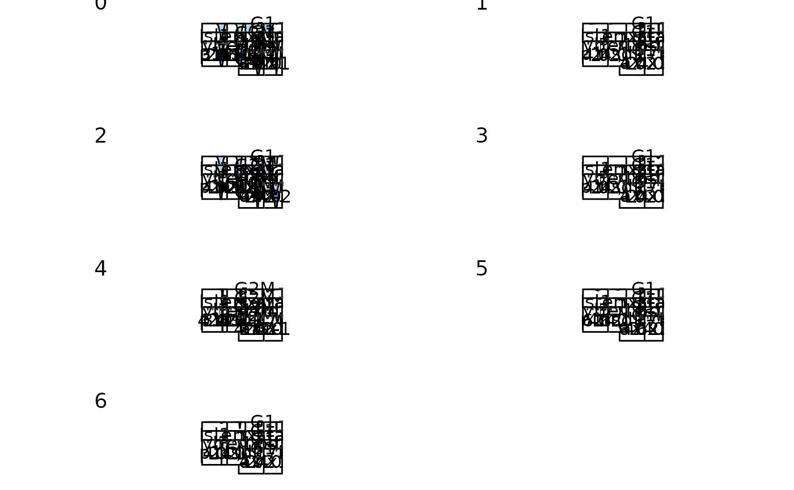
# }